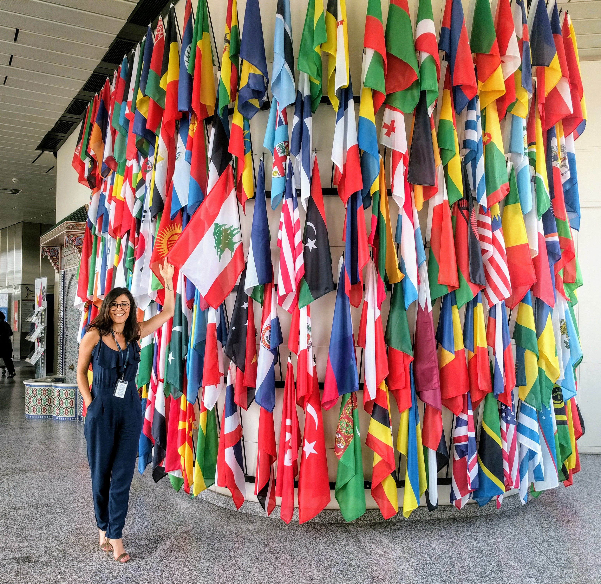
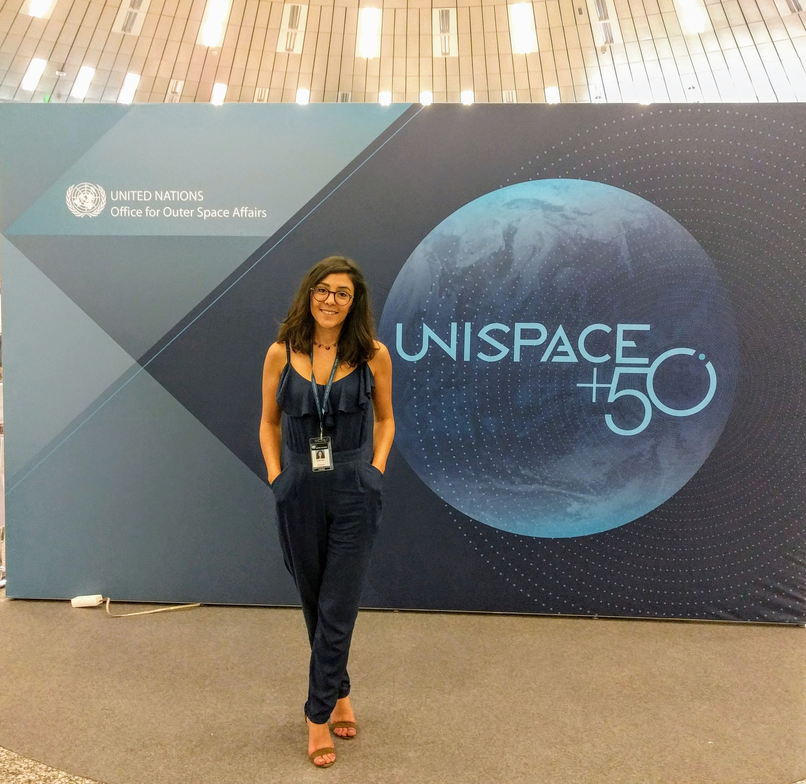

Gender Equality
 
Committed to promoting meritocracy in academia through gender equality and representation, I founded Scheherazade Speaks Science, a science storytelling platform for making sience accessible and promoting female scientists around the globe.
I am a member of the Equality & Diversity committee that successfully achieved an Athena SWAN (a UK high-profile equality initiative) Bronze Award and a Juno Practitioner Award (by Institute of Physics) for the IoA. This role allows me to actively engage in promoting policies that are not only supportive of women entering science but also rising to the top echelons of scientific power, prestige and pay, circumventing a current problem known as the leaky career pipeline. I also represented the IoA at the Women in Astronomy IV conference in Texas.
I am part of the United Nations Space for Women Project established by the United Nations Office For Outer Space Affairs and UN Women to address gender equality (Sustainable Development Goal 5) and support the implementation of the UNISPACE+50 capacity-building priority.
Invited to speak at the Expert Meeting on Space for Women at the UN Women headquarters in NYC, I provided input and recommendations for the Space for Women final report.
At the Space for Women High Level UN Panel at the UN Secretariat in New York in 2017, I addressed the Deputy-Secretary General of the UN Amina Mouhammed alongside high-ranking officials with a proposal to establish a UN-endorsed "Female Alumni Ambassador Programme". This presented a solution for the lack of role models in STEM fields. The UN Office for Outer Space Affairs has adopted the recommendation and plans are under way to build an international network of female scientists who inspire and empower females in their home countries to engage in STEM fields.
Watch me deliver the proposal in the video below, at minute 2:02:50!
Space for Women High Level UN Panel
Proposing the UN-endorsed "Female Alumni Ambassador Programme".